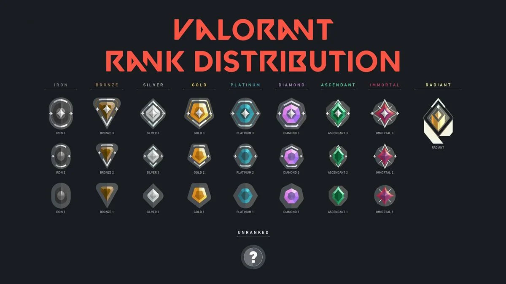

Valorant est un jeu de tir tactique en ligne développé et édité par Riot Games, le créateur du très célèbre jeu League of Legends. Lancé en juin 2020, Valorant a rapidement gagné en popularité en raison de sa combinaison unique d'éléments de tir à la première personne et de stratégie.
Le jeu se déroule dans un univers fictif où des agents aux compétences spéciales s'affrontent dans des matchs en équipe. Chaque agent possède des capacités distinctives qui ajoutent une dimension plus dynamique aux combats, en plus des armes classiques. L'objectif varie selon le mode de jeu, allant de la pose ou du désamorçage de bombes à des missions de sauvetage.
Valorant se distingue par son système anti-triche robuste, visant à garantir un environnement de jeu équitable. Les mécanismes de jeu, y compris les mécaniques de tir précises et les compétences des agents, ont été méticuleusement équilibrés pour encourager la coopération et la coordination d'équipe.
Le jeu a également établi une scène compétitive solide avec des tournois mondiaux et une base de joueurs dédiée. Valorant continue d'évoluer grâce à des mises à jour régulières, l'introduction de nouveaux agents et cartes, ainsi que des ajustements de gameplay pour maintenir l'expérience de jeu fraîche et stimulante pour la communauté.

Valorant est certes un jeu qui peut être joué pour s'amuser, que ce soit avec des inconnus ou avec des amis (personnellement, je n'en ai pas) dans des modes de jeu d'affrontement rapide.
Cependant, le plus gros du jeu se trouve dans le mode "compétitif", là où la grande majorité des joueurs se retrouvent dans des matchs en 5v5. Le but sera d'être la première équipe à gagner 13 manches, pendant une phase de défense et une phase d'attaque. Lorsque vous remportez une partie, vous serez alors récompensé de points ou, au contraire, vous en perdrez en cas de défaite.
C'est dans ce système que repose le côté addictif du jeu. Les points gagnés nous permettent de monter dans un classement créé par l'éditeur du jeu, et c'est alors la plus haute place du tableau que les joueurs passionnés visent, le premier rang. C'est en quelque sorte un accomplissement.
Tout cela en jouant avec des personnes que vous n'avez jamais rencontrées auparavant, ce qui peut rendre la communication au sein de l'équipe très complexe voir toxic , l'utilisation du micro en jeu a parfois tendance a rendre les joueurs trés agressif. on peut alors se retrouver face a des insultes ou du harcèlement simplement en lancant une partie ce qui a tendance a ruiner l'expèreince de jeu .
Créer un jeu vidéo payant est la plupart du temps un frein pour les joueurs et les éditeurs l'ont bien compris. C'est pour cela que le jeu est gratuit, afin de créer une communauté très grande et de donner à tout le monde la possibilité de tester leur nouveau jeu.
Cependant, dans la vie, tout se paye et les créateurs ont besoin d'argent pour continuer le développement du jeu. Ils ont alors mis en place une "Boutique" dans le jeu, dans laquelle on peut acheter des objets virtuels avec de l'argent réel. C'est ce que l'on appelle des "skins" ou autrement dit des cosmétiques différents de ceux de base qui ne donnant aucun réel avantage en jeu, mais qui donnent envie à tous les joueurs de dépenser leur argent.
Ce système est bien souvent malsain, étant donné qu'il n'y a pas de réelle limite dans le nombre d'achats et les prix peuvent aller jusqu'a 100euros pour un simple pack de cosmétique. on peut alors retrouver des joueurs ayant dépensé jusqu'à plusieurs centaines d'euros dans des "biens" fictifs, et les achats en ligne ne sont pas du tout une minpritée de jouer, étant donner que En 2020 43% des joueurs américains déclarent utiliser des skins pour modifier l'apparence des objets ou personnages en jeu.